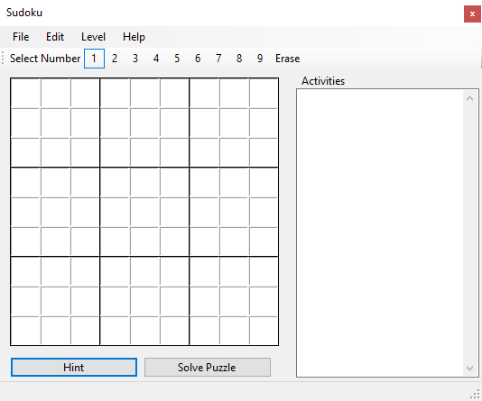
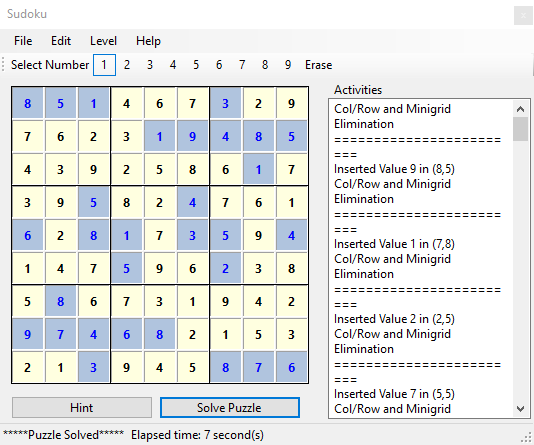

I recived a book called Programming Sudoku by Wei-Meng Lee as a Christmas gift. As a fun little project and coding exersice, I read through the book and followed the instructions on building a sudoku app. However, the book instructions were written in Basic. To add a little extra challenge, I converted the Basic methods to C#. Going throgh the book was a fun exercise and also helped break down the fundamentals on how to solve a sudoku puzzle. However, the methods are long and contain a large amount of loops, nested loops, recursion that does make the application run a bit slow and clunky. If you are new to programming or want so spend time coding like it is a Lego set, this book is a good choice.
When converting the code over to C#, I tried to do a straight over translation on the code. Meaning I took exactly what the book has such as Dim r, c As Integer and converted it to int r, c;. Which is not a problem but the the integers where then used in loops. Instead of setting the variable before as shown in the sample above, lines could have been saved by setting the variable in the loops:
for(int r = 0; r <= 9; r++) {
for(int c = 0; c <= 9; c++) {
// do things here
}
}
The methods used also contained a large amount of coding and were broken down how a human would solve a sudoku puzzle. If I were to refactor the code again, I would utilize algorithms like BFS or DFS to have the puzzle solve faster but also have the solved puzzle set so checking if the number places was correct or invalid.